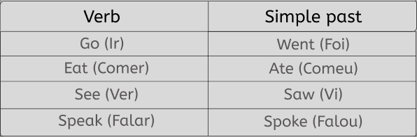

Past Tenses in English
Introdução
Os tempos verbais do passado na língua inglesa são como peças-chave que ajudam a contar histórias e relatar experiências passadas. Compreender como usá-los é fundamental para se comunicar com eficácia em inglês.
Nesta página, vamos explorar os principais tempos verbais do passado, como o Passado Simples, o Passado Contínuo o Passado Perfeito e o Passado Perfeito Contínuo. Vamos desvendar suas formas e aplicações, tornando mais fácil para você se expressar em situações que envolvem o passado.
Passado Simples (Simple Past):
O Passado Simples é uma das formas verbais mais fundamentais para descrever ações que ocorreram em um momento específico no passado. Ele é frequentemente usado para narrar eventos concluídos e situações passadas. Esse verbo possui dois tipos, os regulares e os irregulares, leia os seus significados abaixo:
Verbos Regulares
Verbos Irregulares
Para a maioria dos verbos regulares, você adiciona o sufixo "-ed" ao radical do verbo para formar o passado simples. Observe a tabela:
Os verbos irregulares têm formas únicas no passado simples e não seguem o padrão "-ed". Observe a tabela:

Passado Perfeito Contínuo (Past Perfect Continuous):
O Passado Perfeito Contínuo é um tempo verbal em inglês usado para descrever a duração de uma ação que ocorreu antes de outra ação ou evento no passado. Ele é formado pelo passado do verbo "to have" (had), seguido de "been," e o gerúndio do verbo principal (forma base + "-ing"). O Passado Perfeito Contínuo é empregado nas seguintes situações:
- Para enfatizar a duração de uma ação que começou no passado e continuou até outro ponto no passado: "She had been studying for hours before the exam" (Ela tinha estado estudando por horas antes do exame).
- Para mostrar o progresso de uma ação que antecedeu outra ação passada: "He was tired because he had been working all day" (Ele estava cansado porque tinha estado trabalhando o dia todo
- Em narrativas, para criar contexto e detalhes sobre eventos passados: "When I met her, she had been living in Paris for five years" (Quando a conheci, ela estava morando em Paris havia cinco anos).